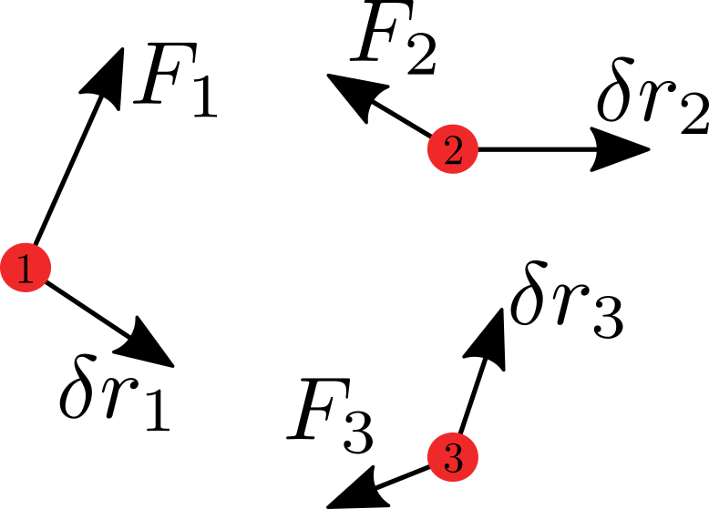
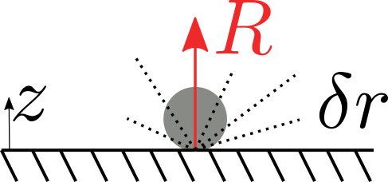
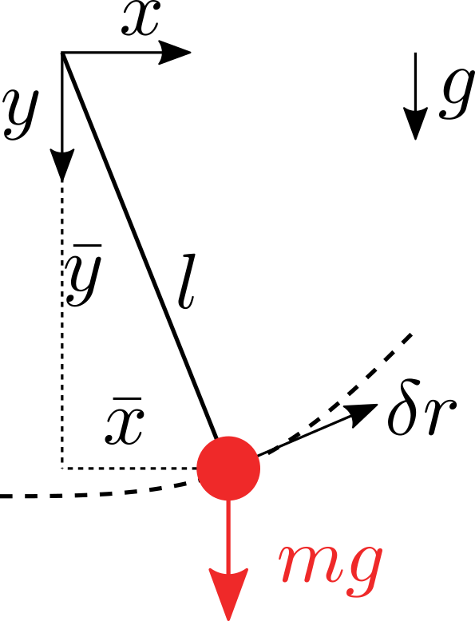
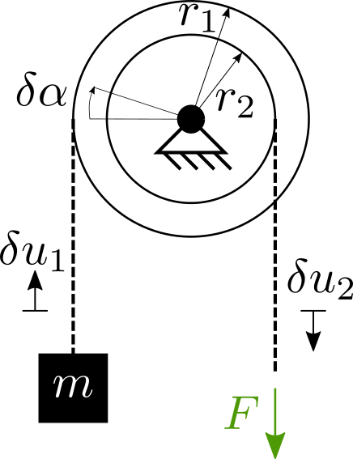
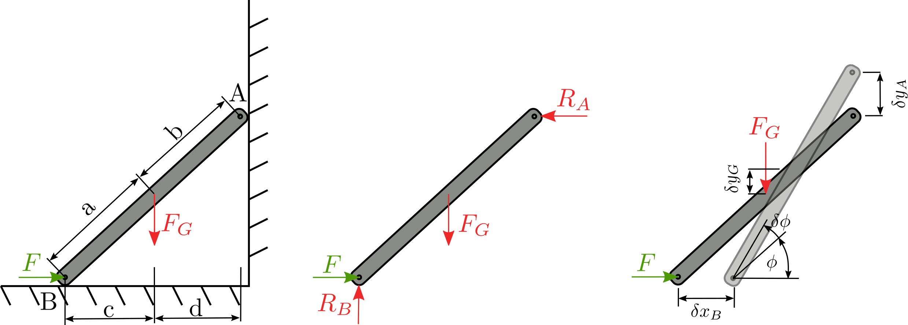

Princip virtuálních prací (PVP) (☕☕☕)
Contents
Princip virtuálních prací (PVP) (☕☕☕)#
PVP je zcela odlišný způsob jak dojít k rovnovážnému stavu tělesa. Výchází z předpokladu, že těleso v rovnováze zůstane v rovnováze i po malém (nekonečně malém vychýlení) a že práce vykonaná silami po tomto malém (virtuálním) posunutí je nulová. PVP princip je univerzální a vzhledem k tomu, že práce (energie) je nezávislá na souřadnicovém systému, je i méně pracný než uvolňovací metoda.
Princip virtuální práce hmotného bodu#
Hmotný bod (HB) je v rovnováze tehdy, pokud platí, že výslednice sil je rovna nule:
Nyní HB přesuneme “virtuálně” o libovolný malý úsek \(\delta r\). HB vykoná virtuální práci:
Vztah říká, že je-li HB v rovnováze, virtuální práce sil působcích na HB je 0 pro libovolné virtuální posunutí \(\delta r\). Pokud je virtuální práce 0, musí platit i obráceně, že HB je v rovnováze. Zvolme například \(\delta r = {\delta x, 0, 0}\), vidíme, že:
Princip virtuální práce pro soustavu hmotných bodů#
Soustava \(N\) HB je v rovnováze jestliže každý HB je v rovnováze, tedy výslednice sil \(F_i=0, i=1, ..., N\).

Pokud každý bod posuneme o \(\delta r_i\), můžeme napsat podle PVP:
Obráceně platí, že pokud je \(\delta W=0\), musí být soustava HB v rovnováze (stejná úvaha jako pro jeden HB.)
Virtuální práce reakčních sil#
Reakční síla \(R\) je dána geometrickou vazbou \(z\geq 0\).

Vidíme, že virtuální posunutí nemůže být libovolné, tj. musí být takové, které neporušuje vazbu (HB nemůžeme zatlačit do stolu) a musí platit, že podmínka vazby je splněna pro \(\pm \delta r\).
Poznámka
Virtuální práce reakčních sil při vratných posunutích slučitelných s vazbami je rovna nule.
Zobecněný PVP#
Výslednice sil působící na itý HB je dána:
\( \begin{equation} F_i = F_i + R_i \end{equation} \)
Podle PVP musí platit, že soustava je v rovnováze tehdy:
Dosadíme-li, 5 do 6:
Víme, že virtuální práce vykonaná reakcemi je 0.
Příklad 01: Kyvadlo#
Uvažujme kyvadlo v homogenním gravitačním poli. Nalezněte polohu, kdy je kyvadlo ve statické rovnováze.

Kyvadlo obsahuje geometrickou vazbu, která je dána:
Virtuální posunutí spočítáme jako diferenciál (nekonečně malá):
Podle PVP platí:
Pro libovolné \(\delta r\), splňující (8), plyne \(x=0\)! Pro PVP s reakcemi neplyne, že síly \(F\) jsou nulové. Nulový je součet \(F + R\)!
Příklad 02: Rovnováha na kladce#
Uvažujme buben zatížený závažím \(m\) v grav. poli. Nalezněte sílu \(F\) tak aby byla soustava v rovnováze.

Podle PVP platí:
Geometrická podmínka je:
Dosazením 12 do 11:
Nebo:
Příklad 03: Podepřený hranol#
Uvažujte podepřený hranol, který je zatížení vlastní vahou. Nalezněte sílu \(F\), tak aby byl hranol v rovnováze.

zaveďme: \(L = a + b\), \(x_B\)=c + d, \(y_A=\sqrt{\mathrm{L}^2 - x_B^2}\) Napišme rovnici vazby mezi pohybem bodu A a B:
\(\delta x_B,\delta y_A\) jsou virtuální posunutí, která jsou na sobě závislá. Rozepsáním získáme:
členy \(\delta x_B^2, \delta y_A^2\) jsou velmi malé a tak je zanedbáme, pak platí, že:
Podobně platí, že:
S uvažováním (18) pak platí:
Virtuální práce musí být nula aby byla tyč v rovnováze:
Musíme sjednotit virtuální posuv…tedy dosaďme z (20):
Pro libovolné nenulové \(\delta x_B\) musí platit, že výraz v závorce je nula! Dosadíme za \(L = a + b, x_B = c + d, y_A = \sqrt{L^2 - x_B^2}\):
Výraz v závorce je rovnice rovnováhy, tedy: